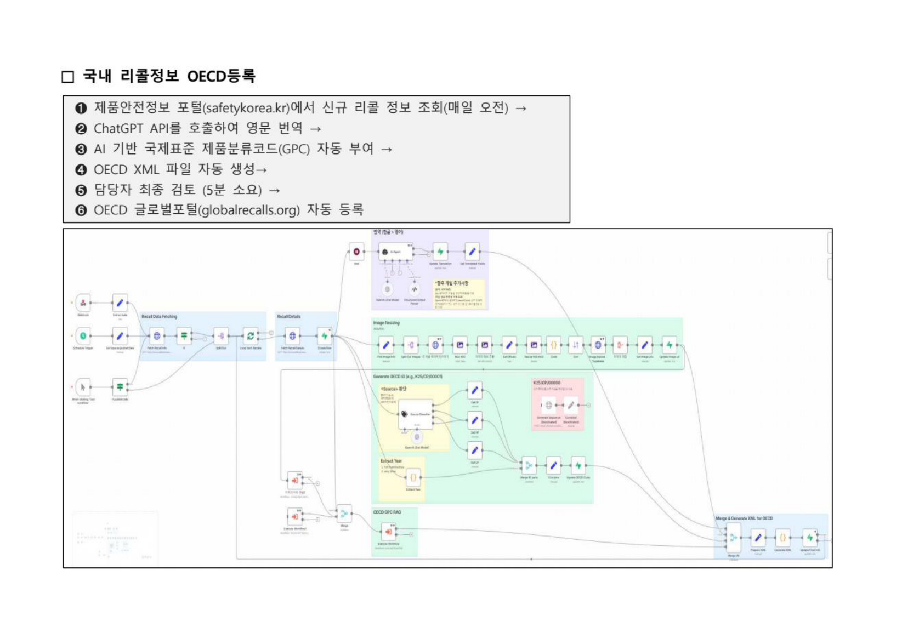
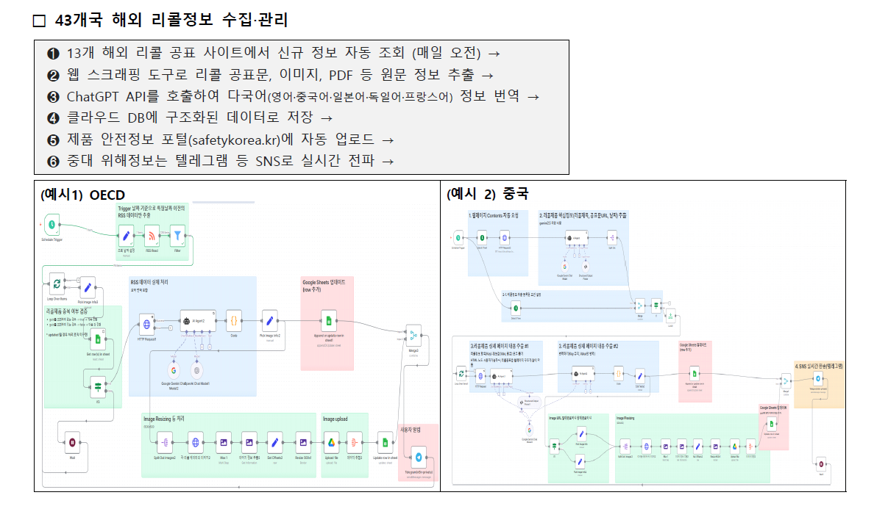
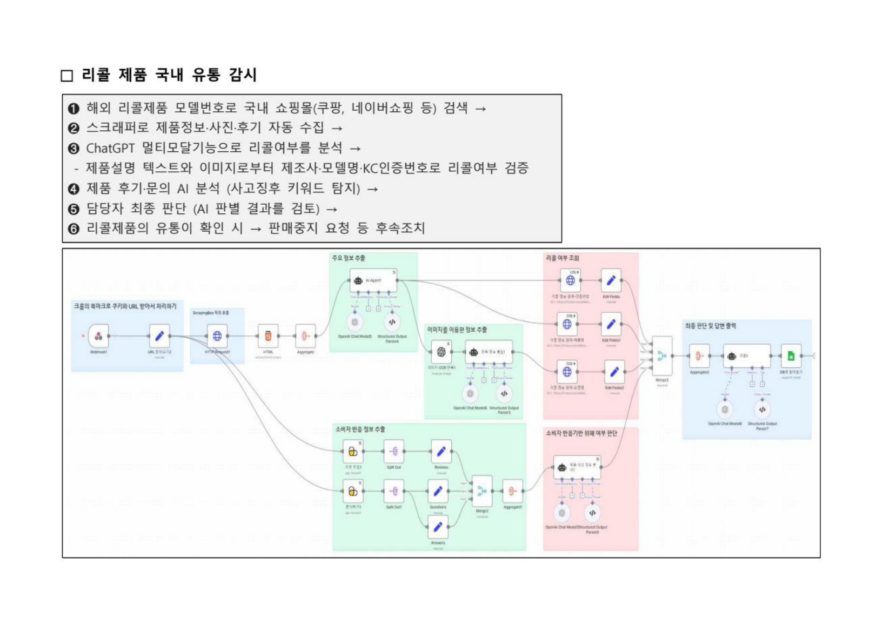
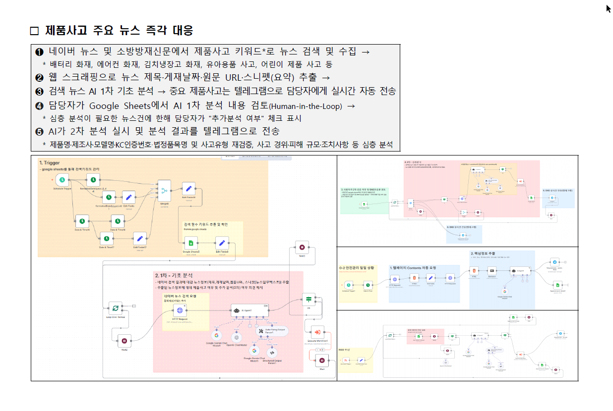
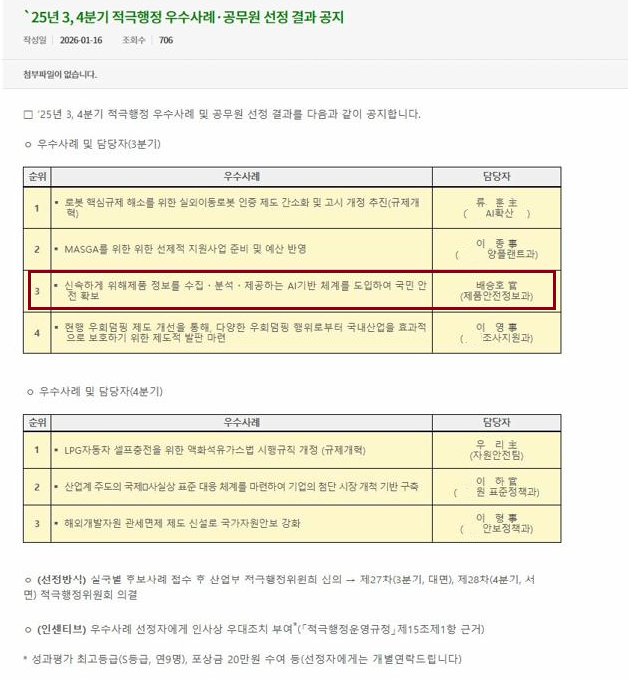

국가기술표준원 제품안전정보과 · n8n + GPT-4 + Supabase + OECD 연동
Korea Agency for Technology and Standards · n8n + GPT-4 + Supabase + OECD Integration
전문 개발자 없이, 공무원 실무자가 직접 구축한 엔터프라이즈급 AI 자동화 시스템.
연간 2,000만원 외주 예산을 100만원으로 줄이고, 처리 시간을 4일에서 1시간으로 단축했습니다.
Low-Code와 AI 도구만으로 가능함을 증명한 정부 혁신 사례입니다.
An enterprise-grade AI automation system built entirely by a government official — no professional developers. Reduced annual outsourcing budget from $20K to $1K, and processing time from 4 days to under 1 hour. A proof-of-concept that public servants can build world-class systems with modern Low-Code/AI tools.
연간 300건 이상 국내 리콜, 43개국 해외 리콜 정보를 담당자가 수동으로 처리하는 구조는 업무 비효율과 정보 공유 지연을 초래했습니다.
Processing 300+ domestic recalls and international data from 43 countries manually created systemic inefficiency and delayed information sharing.
각 모듈은 독립적으로 운영되며, n8n 워크플로우로 오케스트레이션됩니다.
Each module operates independently, orchestrated via n8n workflows.
제품안전정보 포털에서 신규 리콜을 매일 자동 수집하고, AI로 영문 번역·GPC 코드 부여 후 OECD 글로벌 리콜 포털에 자동 제출.
Daily auto-collection from safety portal, GPT-4 translation + GPC classification, auto-submission to OECD Global Recall Portal.

미국·캐나다·일본·중국·EU 등 13개 정부 리콜사이트를 매일 스크래핑, 다국어 AI 번역 후 구조화 DB 저장 및 Telegram 실시간 알림.
Daily scraping of 13 government recall sites (US, Canada, Japan, China, EU), multilingual AI translation, structured DB storage, real-time Telegram alerts.

쿠팡·네이버쇼핑 등에서 리콜 제품 모델번호를 기반으로 판매 여부를 자동 탐지. GPT-4 Vision으로 제품 이미지·후기·문의를 멀티모달 분석.
Auto-detects recalled products on Coupang, Naver Shopping using model numbers. GPT-4 Vision analyzes product images, reviews, and Q&A for risk signals.

네이버 뉴스·소방방재신문을 2시간마다 자동 모니터링. AI가 화재·폭발·감전 등 제품사고 키워드를 분류하고 관계자에게 Telegram으로 즉시 전파.
Auto-monitors Naver News and fire/safety journals every 2 hours. AI classifies fire, explosion, electric shock incidents and sends instant Telegram alerts to stakeholders.

서버 관리 없는 클라우드 네이티브 구성. Low-Code 도구로 전문 개발자 없이 운영 가능합니다.
Gemini 선택 이유: 무료 티어의 높은 요청 한도 → 예산 제한 없이 빠르게 PoC 가능
Cloud-native, serverless architecture. Operable without professional developers using Low-Code tools.
Why Gemini?: High free-tier rate limits → rapid PoC without budget constraints
50개 기업, 4개 분과위원회로 구성된 민관 협력 플랫폼. AI 기반 제품안전 관리의 노하우를 업계와 공유하고 자율 규제 표준을 개발합니다.
A public-private collaboration platform of 50+ companies across 4 subcommittees. Sharing AI-based product safety expertise with industry and developing voluntary standards.
산업통상자원부 적극행정위원회에서 심사 · 선정. 민간 전문가 위원회 평가를 통해 적극행정 우수공무원으로 인정받았으며, 성과평가 최고등급(S등급) 및 포상금 수여.
Selected by the Ministry of Trade, Industry and Energy Proactive Administration Committee. Recognized as an excellent proactive administration civil servant by a private expert panel, receiving top performance grade (S) and commendation.
